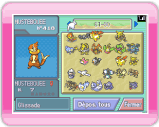
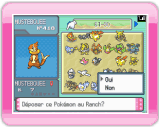
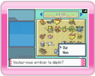
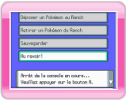

14 |
Déposer un Pokémon |
 |
Avant de déposer un Pokémon au Ranch, veuillez lire la section "13. Se connecter à la DS".

Ecran DS
Sélectionnez DEPOSER UN POKÉMON AU RANCH dans le menu principal de la DS pour accéder à l’écran ci-contre.

Ecran DS
Sur votre Nintendo DS, choisissez le Pokémon que vous souhaitez envoyer au Ranch. Appuyez sur

Ecran DS
Une fois le transfert terminé, choisissez FERMER sur la Nintendo DS. Lorsque le message VOULEZ-VOUS ARRETER LE DEPOT? s’affiche, sélectionnez OUI pour retourner au menu principal de la DS.

Ecran DS
Si vous sélectionnez AU REVOIR! dans le menu principal de la DS, le message SAUVEGARDER ET QUITTER LE JEU? s’affiche. Choisissez OUI pour arrêter la connexion. |
 et sélectionnez DEPOSER. Le message DEPOSER CE POKEMON AU RANCH? s’affiche. Sélectionnez OUI.
et sélectionnez DEPOSER. Le message DEPOSER CE POKEMON AU RANCH? s’affiche. Sélectionnez OUI. |
 |
 |